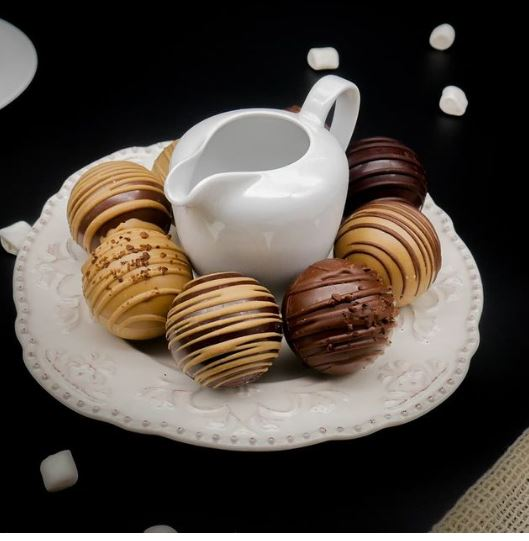

În această serie de articole ne propunem să vizităm cartierele importante ale Clujului și să le descoperim comorile. Un fel de Treasure Hunt am îndrăzni să îi spunem. Facem astfel o listă cu recomandări diverse, de la localuri cochete la parcuri mai puțin cunoscute, în care poți ieși să te relaxezi singur sau cu prietenii. Și, de ce nu, poate cu prima ocazie îți vei scoate și rudele sau amicii care vin să te viziteze la o escapadă… prin cartier ;).
Îți povesteam că prima oprire am făcut-o în Gheorgheni, unul dintre cartierele noastre favorite din Cluj. Apoi, am mers mai departe până în Grigorescu, care ne-a surprins plăcut. Ulterior, am ajuns în Zorilor, un cartier în care ne-am tot întoarce. Recent, ne-am plimbat prin Mănăștur , cel mai mare cartier al Clujului, care ne-a impresionat cu istoria lui bogată, picturile murale care-i dau culoare și varietatea de cofetării la care te poți îndulci. Acum am ajuns în Bună Ziua, cartierul al cărui nume plăcut ne face, aproape instant, să zâmbim. Situat în partea sudică a orașului, cartierul se dezvoltă pe zi ce trece din ce în ce mai mult, găzduind blocuri noi și ansambluri rezidențiale. Iată ce poți face în acest cartier.

Jaxx
Dacă le faci o vizită celor de la Jaxx între orele 11:00-16:00 te poți bucura de un „prânz cinstit” la prețul de 39RON. Ca supă, poți alege între: asian soup și Jaxx soup (supă cremă de legume). Ca fel principal, poți opta pentru: fish and chips, buttermilk fried chicken, california burger și chicken parmigiana. Desertul cu care nu poți să dai greș este brownie-ul de 75g. Iar extra, poți adăuga: cornichons, pâine artizanală cu maia, cartofi în coajă extra, coleslaw salad, ou, desertul zilei, crutoane, cheddar, jalapeños, bacon, sos homemade tartare, sos homemade barbeque, muștar a la Cluj (bio), sos Sriracha classic, precum și sos Sriracha mayo. Poți adăuga prânzului tău până la cinci astfel de ingrediente în plus. Opțional, tot pentru prânz, mai recomandăm și Jaxx fajita vegetarian (39RON) – legume trase la tigaie și cu condimente, servite alături de guacamole homemade, smântână, lipie și sos chimichurri. Terasa lor e pregătită de sezonul primăvară-vară și te așteaptă pe strada Emil Isc, la numărul 25.
Ce ar trebui să știi, istoric vorbind, despre cartierul Bună Ziua?
Considerat a fi o Pipera a Clujului, Bună Ziua a apărut în 1989, după Revoluție, iar momentul apariției sale e strâns legat de acest eveniment. Ziua era bună, căci comunismul se sfârșise. Astăzi, Bună Ziua e considerat a fi cartierul care pare că nu doarme niciodată, dar, la fel ca în Andrei Mureșanu, prețurile chiriilor nu se lasă mai prejos. Deși în clipa de față are o populație mică, se anticipează o dezvoltare intensă în următorii ani, la fel ca toată zona înconjurătoare.
Cafenele la care îți bei cafeaua și te reîncarci cu energie
Atunci când ne propunem să luăm la pas un cartier întreg, o facem mai bine în compania unei cafele de specialitate to-go – așa cum este cea pe care o găsim la Coffee Spot. Printre tipurile de cafea cu care te așteaptă ei, pe str. Bună Ziua, la nr. 39, se numără: Espresso Machiatto (8RON), Cappuccino (9RON), Flat White (11RON) și Latte Grande (13RON), căruia îi poți adăuga arome pentru 3RON în plus. Dacă nu ești mare fan de-al cafelei și-ți dorești, pur și simplu, o băutură care să te energizeze înainte să pornești la drum, poți opta pentru: ciocolată caldă (9RON), ceai (7RON) și băuturi răcoritoare acidulate (6RON).
Alternativ, dacă simți că ai prefera să savurezi o cafea care ți-e familiară deja, atunci poți face o oprire la Panemar. Având două locații deschise în cartierul Bună Ziua – una pe str. Fagului, nr. 8 și cealaltă pe str. Ștefan Luchian, nr. 2, poți alege să-i treci pragul celei a cărei amplasare este mai apropiată de tine. Băuturile fresh din meniul lor dintre care poți alege sunt variate și includ cafea (Ristretto, Espresso, Cappuccino), milkshake (lapte cu sirop de căpșuni și lapte cu sirop de banane), fresh de portocale, limonadă și o selecție de latte-uri delicioase (Amaretto Latte, Gingerbread Latte și Forest Berries Latte). De la Panemar, după cum ne e obiceiul, îți recomandăm să nu pleci fără un croissant cu fistic.
Restaurante la care mănânci bine
În cazul în care faci o oprire la Panemar, pe str. Fagului, nr. 8, în jurul orei prânzului, îți recomandăm să te răsfeți cu o masă la Da Vinci Ristorante, tot pe str. Fagului, nr. 87. Îmbinând rafinamentul bucătăriei italiene și al eleganței decorative mediteraneene într-un superb cadru natural, locația este una demnă de postat pe contul tău de Instagram. Spațiul generos al domeniului oferă numeroase locuri de parcare pentru invitați, un lounge primitor și o terasă verde cu superbă priveliște spre dealurile înverzite ale zonei. Acolo, te așteaptă un Meniu À la Carte, care conține specialități precum: Cevice de pește ricciola (40RON), Antipasto misto all italiana (30RON), Spaghetti allo scoglio (65RON), Caracatiță caramelizată cu piure de cartofi și trufe (80RON) și Dorada (65RON).
În aceeași idee, un alt restaurant cu specific italian căruia îți recomandăm să îi treci pragul la cină, alături de familie și/sau prieteni, este Restaurant Buongiorno. Amplasat pe str. Bună Ziua, nr. 39, bl. E7D, sc. 1, localul te așteaptă cu o atmosferă caldă la parterul unui imobil liniștit. Buongiorno este un mic restaurant de familie în care echipa îți gătește cu drag preparate cu specific toscan. Când ajungi la ei, te întreabă „Cari amici, de ce aveţi poftă azi?” și, pornind de aici, îți fac recomandări care se regăsesc în meniul lor ofertant. Câteva dintre preparatele care ne-au atras nouă atenția se numără: Platou toscan – Prosciutto di Parma, salam toscan, Finocchiona, brânză Pecorino, piadina (38RON), Somon la cuptor cu fulgi de migdale și dovlecei (58RON) și Gnocchi cu gorgonzola, șuncă și rucola (35RON).
Cofetării și ciocolaterii la care să te îndulcești
Rămânem tot în zona străzii Bună Ziua și ne îndreptăm spre Cofetăria Saveur, la numărul 45. Aici ne așteaptă un laborator de cofetărie axat pe produse lucrate manual, din ingrediente tradiționale, cu gust pe măsură. Deserturile care te așteaptă la Saveur sunt variate, rafinate, iar șansele să nu găsești cel puțin un desert care să-ți fie pe plac sunt mici. Iată câteva dintre opțiunile înspre care te poți orienta: ciocolată (trufe albe cu cocos și trufe cu portocală), biscuiți (biscuiți cu migdale, lămâie și ovaz), patiserie (chec cu prune și ovăz, choux fantezie, tartă cu dovleac și caramel) și preparate raw vegane (raw cu cocos, raw cu mere și migdale și raw cu nuci și zmeură).
În cazul în care nu găsești dulciuri care să fie pe placul tău la Cofetăria Saveur, vestea bună este că pe aceeași stradă, Bună Ziua, la același număr, 45, te așteaptă o ciocolaterie, Xocol’Arte. Este musai să-i faci o vizită mai ales dacă ești fan al ciocolatei, căci conceptul Xocol’Arte s-a născut din dragostea pentru ciocolată și îți oferă oportunitatea să descoperi gustul natural al ciocolatei artizanale. Realizată din cele mai fine boabe de cacao din Ecuador, Xocol’arte e o ciocolată „from tree to bar”. conține doar ingrediente naturale, cu certificări organice, pentru obținerea cărora nu s-au utilizat pesticide, îngrășăminte dăunătoare sau produse modificate genetic. Așadar, poți alege între Ronda, un spectacol de ciocolată și Cuadro, un savuros tablou multisenzorial, pictat de mână.
Parcuri pentru câini, pisici, copii, relaxare
Fiind un cartier în plină dezvoltare, parcurile și spațiile verzi lipsesc, însă fiecare din proiectele imobiliare aflate în derulare prevăd astfel de facilități. Pe deasupra, administrația locală promite să finalizeze, cât de curând, amenajarea Parcului Bună Ziua. În acest sens există deja un proiect de parc avansat, o zonă verde de 5.000 de metri care face parte dintr-un plan urbanistic privat. După ce au fost identificate șase posibile zone pentru amenajarea unui parc, G. Moisil, K. Lajos, M. Sorescu, C. Negri – A. Graur, Șt. Luchian – G. Constantinescu, respectiv Becaș, s-a convenit asupra amenajării parcului în zona Becaș. Astfel, se preconizează că locația noului parc este situată la o distanță de mai puțin de 50 metri față de cea mai apropiată stație de transport public. Totodată, se discută și despre amenajarea unui nou mall în cartierul Bună Ziua.
Zone unde poți să faci sport
Pe str. Erkel Ferenc, nr. 2-4 te așteaptă una dintre sălile marca 18Gym – sala de la care, după cum îți spuneam în trecut, sigur pleci cu rezultate. Aici poți opta pentru trei dintre antrenamentele „semnătură” pentru 18Gym: 1). XTREME FIT – challenge de 8 săptămâni, cu antrenamente de grup diversificate, special create pentru a te ajuta să slăbești și să te tonifici într-un mod energic și plin de distracție, 2). Back to FIT – challenge de 12 săptămâni, în care antrenorii 18Gym te vor motiva să ajungi la rezultatele dorite într-un mod sănătos și eficient și 3). Booty Lift Challenge – challenge de 8 săptămâni, program cu antrenor personal, nou, dedicat femeilor.
Una dintre sălile de fitness la care ai acces ușor dacă locuiești în cartierul Bună Ziua este Gymotion, un studio amplasat aproape de centrele comerciale și de interes ale cartierului, pe str. Fagului, nr. 69. La Gymotion Studio vei fi plăcut surprins/ă de un cadru intim, restrâns, o atmosferă cozy, caldă și prietenoasă. Antrenamentele se desfășoară cu un număr redus de persoane (maxim 12 persoane la clasele de grup), oferind fiecărui client spațiul și intimitatea necesară atât confortului personal, cât și executării corecte a antrenamentelor. Mai mult, Instructorii pe care îi întâlnești la Gymotion Studio sunt pasionați, dedicați profesiei lor, dornici să împărtășească cunoștințele lor în domeniul wellnessului, sportului și dansului, cu tine.
Iar A Pilates Studio, amplasat pe Aleea Paltinului, nr. 6, este un studio care se concentrează strict pe pilates, care promite să te ajute să-ți aliniezi corpul, mintea și energia. Studio-ul este unul intim, de dimensiuni restrânse, ca să se poată lucra individual sau cu un număr restrâns de persoane odată, astfel încât fiecare mișcare să poată fi ghidată și supravegheată așa cum trebuie. În pilates, corectitudinea în mișcare e mult mai importantă decât numărul de mișcări efectuate, așadar este un sport care solicită rezistență și echilibru. Există o varietate impresionantă de servicii pe care A Pilates Studio le oferă, printre care se numără: Pilates Reformer, MOTR, capsula SPA/sauna cu infraroșu, drenaj limfatic, Detox & Feel Good | All in one și tratament electrostimulare. Detalii despre fiecare dintre acestea te așteaptă aici.
Piețe și producători locali
Dacă locuiești în cartierul Bună Ziua, știi că în loc să mergi la piață în adevăratul sens al cuvântului, îi faci o vizită Carmangeriei Moldovan, amplasată pe str. Ștefan Luchian, nr. 2. Pe de o parte, aici găsești preparate gata gătite, numai bune de pus pe masa de prânz în weekend-uri (și nu numai). Câteva exemple de astfel de delicatese sunt pulpele de rață confiate, coastele de vită cu sos barbeque și pulpa de curcan marinată în vin cu sos de măr. Pe de altă parte, dacă preferi să fii tu cel/cea care-și prepară prânzul, ai de ales între următoarele produse: potrivite pentru grătar, carne proaspătă, mezeluri, brânzeturi și lactate și produse din bucătăria Moldovan (unde poți opta între platouri și pofte bun făcute). Ceea ce ne-a făcut nouă cu ochiul din meniul lor este platoul din brânzeturi maturate (119RON), care este potrivit pentru 6-8 persoane.
S-ar putea ca și în cazul tău, florile să fie nelipsite din sacoșa cu cumpărături, atunci când îți faci drumul de sâmbăta dimineața la piață. De aceea, îți recomandăm să te îndrepți înspre florăria Artfleur, care este localizată pe str. Bună Ziua, nr. 82C. Ei știu că eleganța constă în detalii și, de aceea, au grijă ca fiecare aranjament floral pe care-l pregătesc să exprime una dintre următoarele emoții, după caz: dragoste, stimă, omagiu și/sau apreciere. Aranjamentele și decorațiunile care te așteaptă la Artfleur sunt realizate folosind flori și plante de sezon, alese cu grijă după gustul și nevoia ta. Dacă vrei să încerci ceva nou, tot la ei poți apela și pentru proiecte dedicate balconului sau grădinii tale.
Magazine naturiste
Dacă îți dorești să acorzi o mai mare atenție sănătății și stării generale de bine, este bine de știut că în Bună Ziua te așteaptă trei magazine naturiste. Prevenția este cheia succesului în lupta cu bolile, iar produsele naturiste îți pot da o mână de ajutor în acest sens. Fie că vorbim de ceaiuri, amestecuri din plante, siropuri sau cosmetice, aceste produse nu trebuie să lipsească din kit-ul tău pentru situațiile de urgență. Așadar, ca să-ți refaci stocul, poți porni înspre:
- Drogheria Roeli (str. Kelemen Lajos, nr. 2) – unde găsești produse bio, naturiste, ceaiuri, și tincturi medicinale,
- Remedium Farm (str. Bună Ziua, nr. 25A) – care îți oferă remedii precum uleiuri esențiale, tincturi, extracte și uleiuri vegetale,
- Managis Bio (str. Trifoiului, nr. 14) – unde te așteaptă gustări și băuturi bio, alimente fără gluten și produse bio pentru casă și corp.
Unde reciclezi?
Din păcate, deocamdată, nu există un punct de reciclare stabilit în cartierul Bună Ziua. Însă cele mai apropiate puncte de reciclare se află în cartierul Zorilor – la intrarea în Piața Zorilor, stațiile Sigurec. Aici se pot recicla sticle de plastic până în 3l și doze de aluminiu. După introducerea deșeurilor în stații, utilizatorii vor primi un tichet eliberat de aparat. Pe baza acestui tichet, vor beneficia de reduceri în magazinele partenere ale proiectului. Alternativ, o a doua astfel de stație poate fi găsită în cartierul Mănăștur în zona Piața Flora. Despre mai multe astfel de opțiuni de reciclare am povestit într-un material anterior, referitor la unde și cum reciclăm în Cluj.
Creșe, grădinițe și școli pentru copii în Bună Ziua
Creșele, grădinițele și școlile dintr-un cartier reprezintă factori importanți de luat în calcul pentru familiile care decid să se stabilească într-un anumit cartier din oraș. În Bună Ziua, încă se lucrează la dezvoltarea mai multor astfel de proiecte. Una dintre cele mai noi asemenea locații din Cluj este cea de-a doua structură a Creșei Martinel, finalizată în 2020. Creșa Martinel se împarte în două structuri: 1). structura I, aflată pe str. Alverna, nr. 63 și 2). structura II, localizată pe str. Theodor Capidan, nr. 17, care poate să găzduiască un total de 35 de copii.
Din perspectiva liceelor, Liceul Teoretic „Elf” și-a inaugurat de curând o nouă clădire pe str. Bună Ziua, nr. 35D. Aceasta găzduiește: 20 de săli de clasă, multiple laboratoare și ateliere (științe, informatică, muzică, artă, tehnologie și digitalizare), un cabinet psihologic, un cabinet medical, o bibliotecă și o terasă la nivelul superior, amenajată pentru socializare, sport și recreere. Clădirea are 8 niveluri și poate acomoda până la 600 de elevi și cadre didactice. Așa, aici s-a conturat un sediu destinat învățământului gimnazial și liceal.
Până data viitoare când ne dăm întâlnire în alt cartier, tu ce alte zone mai puțin cunoscute din Bună Ziua dorești să împărtășești cu noi? De la parcuri, piețe, ziduri colorate sau cafenele, așteptăm cu interes părerea ta, iar noi o vom face cunoscută.
Prieten, explorator, cel cu un plan: ClujLife – Te scoate din casă!
De ce facem ceea ce facem?
La început a fost… nimeni și nimic care să ne vorbească despre viața orașului, despre ce se întâmplă în materie de evenimente și localuri pe plan local, niciun motiv care să ne scoată din casă.
Everyday we’re clujlife(ing). Ieșim din casă, vedem ce se întâmplă, ce mai e nou, ce mai zice lumea, ce-ar mai fi interesant de făcut, și apoi îți povestim și ție. Facem asta din Ianuarie 2008. Prezența aceasta îndelungată ne-a adus destule cunoștințe și curaj încât să abordăm subiecte pe care nu le ”atinge” nimeni. Avem informații pe care nu le găsești în altă parte și acces la mulți oameni din varii domenii.